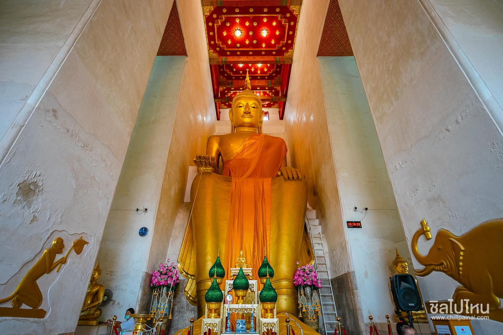
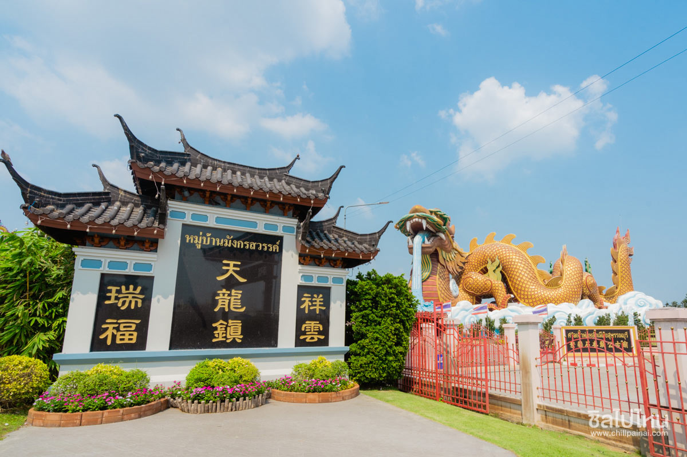
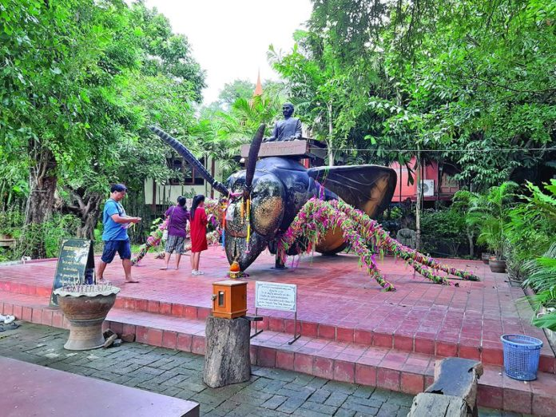
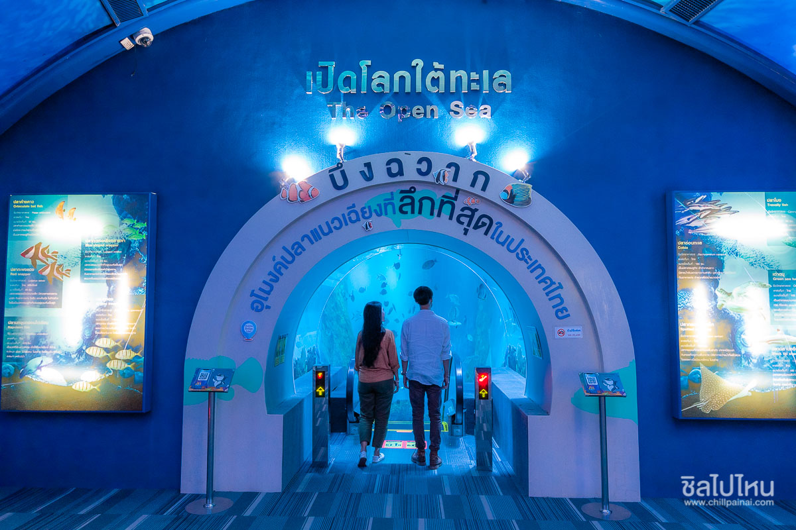

วัดป่าเลไลยก์วรวิหาร
เริ่มด้วยการเอาใจสายบุญ สายมูเตลูกับวัดเก่าแก่คู่บ้านคู่เมืองชาวสุพรรณกันก่อนเลยกับ วัดป่าเลไลยก์วรวิหาร แต่ชาวเมืองสุพรรณก็จะเรียกที่นี่ว่า "วัดป่า" ความโดดเด่นของวัดนี้คือภายในวิหารนั้นจะ ประดิษฐานหลวงพ่อโตปางป่าเลไลยก์ขนาดใหญ่มากๆ นอกจากหลวงพ่อโตแล้ว ภายในวัดยังมีการทำบุญ บูชากราบไหว้พระ เติมน้ำมันตะเกียง ทำบุญประจำวันเกิด รวมไปถึงทอดผ้าหรือถวายสังฆทานเป็นต้น ทำ เป็นบางรายการก็ได้หรือทำทุกอย่างครบวงจรสายบุญก็ได้อีกเช่นกันเวลาเปิดบริการ: ทุกวัน 08:00–18:00 น.

พิพิธภัณฑ์ลูกหลานพันธุ์มังกร
ที่พิพิธภัณฑ์ลูกหลานพันธุ์มังกร ถือเป็นหนึ่งในสถานที่มหัศจรรย์เมืองไทย ในโครงการ 12 เดือน 7 ดาว 9 ตะวัน ของการท่องเที่ยวแห่งประเทศไทย ภายในพิพิฒภัณฑ์มีทั้งหมด 3 ส่วน คือ ศาลเจ้าพ่อหลักเมือง ศาลเจ้าสไตล์จีนที่มีประวัติมายาวนานตั้งแต่สมัยกรุงศรีอยุธา, พิพิธภัณฑ์ลูกหลานพันธุ์มังกร และหมู่บ้าน มังกรสวรรค์ ที่มีทั้งของกินและของฝากให้ได้ซื้อติดไม้ติดมือกลับบ้านเพียบ เป็นอีกหนึ่งที่ที่ห้ามพลาด เลยครับเวลาเปิดบริการ: วันพุธ-วันศุกร์ เวลา 10:00–16:00 น. วันเสาร์-วันอาทิตย์ เวลา 09:00–17:00 น.

วัดแค
ไปต่อที่วัดแค ใครคิดจะไหว้พระ 9 วัดสามารถเก็บวัดที่ถนนเส้นนี้จะได้ทั้ง วัดแค วัด พระลอย วัดพระนอน วัดพร้าวเป็นต้น วัดนี้นอกจากจะไหว้พระแล้วเรายังสามารถไหว้ขอพรท้าวเวสสุวรรณที่ขึ้นชื่อ เรื่องทรัพย์สินเงินทอง การทำมาค้าขาย ของานปังขอตำแหน่งได้ ซึ่งจริงๆ แล้ววัดแคนั้นมีหลายโซน หลากหลาย สิ่งศักดิ์สิทธิ์ให้คุณได้กราบไหว้เลยครับ ทั้งพระพุทธรูปปรางต่างๆ หมอชีวกโกมารภัจจ์ ท้าวเวสสุวรรณ ต่อยักษ์ของ ขุนแผน และยังมีการจำลองสถานที่ทางธรรมชาติเซตฉากขึ้นมา ทั้งถ้ำ ทั้งซุ้มต้นไม้ไม้เลื้อย และเพิ่มไอนำช่วยให้ รู้สึกดีจากอากาศร้อนๆ เลยครับเวลาเปิดบริการ: ทุกวัน เวลา 08:00-18:00

บึงฉวากเฉลิมพระเกียรติ
ไหว้พระหนำใจแล้วก็พาเด็กๆ ไปเพลิดเพลินกับการชมสัตว์มากมายหลากหลายชนิด ไม่ใช่แค่เด็กๆ ผู้ใหญ่ก็ ไปได้นะครับ บึงฉวากเป็นบึงน้ำธรรมชาติที่มีพื้นที่ประมาณ 2700 ไร่ ตั้งอยู่ในอำเภอเดิมบางนางบวช และได้ รับการประกาศให้เป็นเขตคุ้มครองสัตว์ป่า ไฮไลท์ที่เมื่อพูดถึงบึงฉวากแล้วทุกคนจะต้องนึกถึงก็คงหนีไม่ พ้นอะควาเรียมสัตว์น้ำ ที่มาในรูปแบบอุโมงค์ขนาดใหญ่ กล่าวกันว่าใหญ่ที่สุดในเอเชียเลย แต่จริงๆ แล้วที่นี่ ไม่ได้มีแค่สัตว์น้ำนะครับ แต่ยังมีกรงนกและสัตว์อื่นๆ อีกมากมาย กิจกรรมนอกจากชมปลาแล้วก็คือการให้ อาหารสัตว์ครับเวลาเปิดบริการ: ทุกวัน เวลา 08:30–16:30 น.